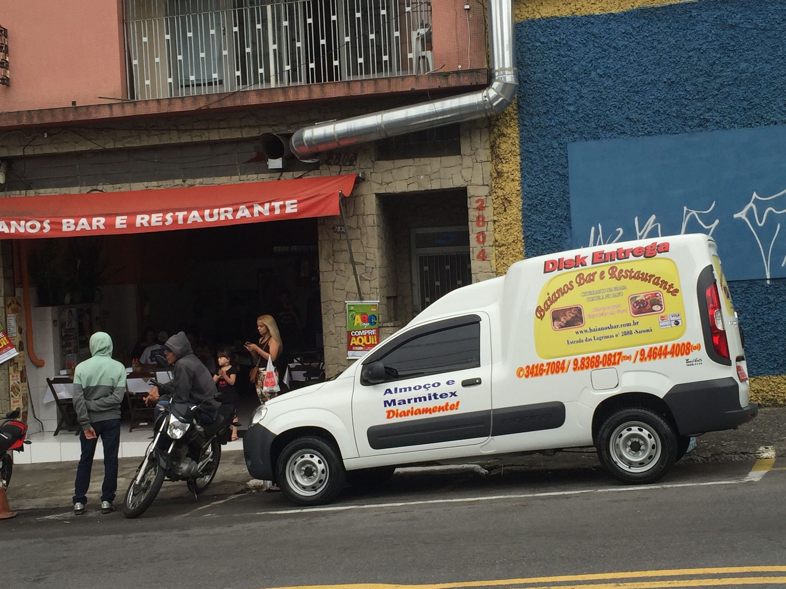
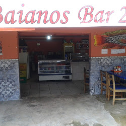
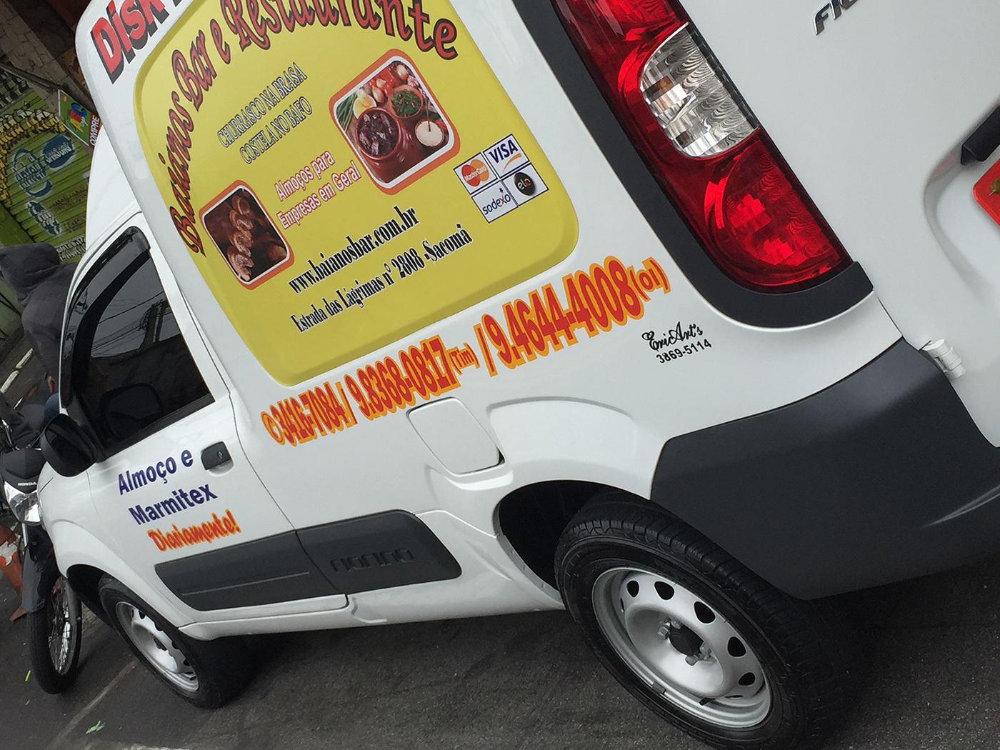
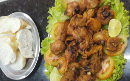
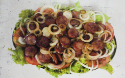
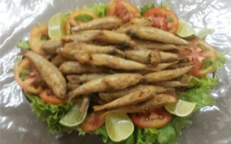
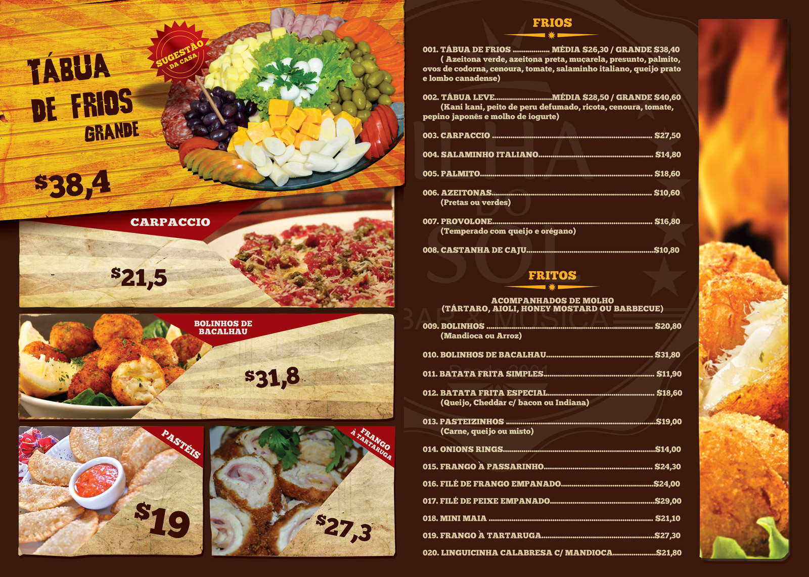

O Baianos Bar foi fundado em 08/05/2011 pelo Adalto Baiano, com um início difícil como a maioria de todo empreendedor. Sempre tive vontade de montar algo para mim, e tive uma oportunidade com a venda deste ponto, para conseguir a compra do ponto e dar ínicio a nova jornada de trabalho na vida, fiz a venda de meu carro e mais algumas parcelas.
Após a compra do ponto, comecei a montar, para que se transformasse em um ótimo bar e restaurante da região, com a ajuda da Engeform que acreditou no meu trabalho solicitou 4 marmitex por dia, após um período aumentou para 16 marmitex, com a visão de sempre melhorar veio o pedido da Engeform com 93 marmitex por dia, onde para nós que parecia ser um grande desafio já que estava-mos no começo , lutamos para conseguir crediário para fazer as 93 marmitex por dia. Onde conseguiu se estruturar e se organizar financeiramente, com muito trabalho está tendo o crescImento no mercado.
Com nosso bom desempenho, surgiram novas empresas contratando nossos serviços de marmitex, refeição em geral. Hoje entregamos para empresas do bairro, na paulista, no centro de SP. Hoje possuímos moto para entrega, fiorino e demais serviços delivery.
Nossa ideia aqui também é ser uma visão social, hoje temos como grande foco ações sociais, sendo uma vez por semana nossa associação nos juntamos para levar marmitex para os moradores de rua. E estamos criando um novo projeto onde ajudará muitas pessoas carentes.
Nosso ponto de encontra para associação é feito uma vez por mês para mais informações entrar em contato, e venham parcipar com a gente, e seja mais um na luta contra a fome no brasil.

Baianos Bar
Primeiro Baianos Bar da região conta com um espaço de _tamanho-em-metros_ suportando _tantas_ pessoas confortavelmente, a especialidade da matriz é _nome-do-prato_, _nome-do-prato_ e _nome-do-prato_.

Baianos Bar 2
Novo Baianos Bar conta com um espaço de _tamanho-em-metros_ suportando _tantas_ pessoas confortavelmente, a especialidade da filial é _nome-do-prato_, _nome-do-prato_ e _nome-do-prato_.
Nossas Especialidades
O Restaurante e Bar Baianos, tem como sua especialidade a comida típica brasileira. A cebola, o alho e o sal formam o trio de ferro da cozinha, sendo utilizados para temperar quase tudo o que fazemos no dia a dia da cozinha, são os temperos que todos nós conhecemos, porém com um detalhe Baianos o que transforma a melhor comida da região.
Mas podemos ir além, transformando pratos comuns com novos sabores, aromas e cores usando ervas e especiarias baratas e fáceis de encontrar. Portanto o que procuramos é incorporar mais temperos na sua alimentação tornando mais saudável, pois você pode diminuir a quantidade de sal na comida. Essencial para hipertensos e pertinente para quem cuida da saúde.
Nossos, temperos são tostado antes da utilização, sendo assim, liberando ainda mais aroma e sabor fazendo deliciosos molhos. Conheçam nossas três melhores especilidades:
Feijoada
Presente em cardápios de todo o país
É famosa até no exterior, ela faz jus ao título de prato nacional. Embora existam muitas versões da receita, prevalece a servida na cidade do Rio de Janeiro, onde surgiu o primeiro registro do termo "feijoada". Portanto no Baianos não é diferente na panela, com carne-seca, paio, linguiça, lombo, costela, pé, orelha e rabo de porco, o feijão-preto rende um saboroso e consistente caldo, servido com arroz, laranja, torresmo e couve. Aqui também servimos com linguiça frita e banana à milanesa). Antes de ir para o fogão, as carnes são dessalgadas, processo que começamos pelo menos um dia antes do cozimento.
Tilápia com Baião
Venha saborear esse prato com o peixe,
vulgarmente chamados de tilápia, é originário do continente africano e o termo baião, que deu origem ao nome do prato, designa uma dança típica do nordeste, por sua vez derivada de uma forma de lundu, chamada "baiano". A origem do termo ganhou popularidade com a música Baião de Dois.
Virado Paulista
Virado à Paulista é um prato típico do estado brasileiro de São Paulo,
criado na época das entradas, bandeiras e monções, no Brasil Colônia.
Surgiu espontaneamente, para alimentar os bandeirantes em suas expedições. Eles carregavam junto com lanças, terçados, alfanjes, arcabuzes e bacamartes, farnéis repletos de feijão cozido, habitualmente sem sal, para não endurecer, farinha de milho (a de mandioca só começou a ser produzida em escala apreciável em São Paulo no século 18), carne-seca e toucinho. Com o chacoalhar da andança, os ingredientes ficavam virados ou revirados (daí o virado).
Eventos/Fotos

Serviço de Delivery
Entregamos na região

Aperitivo Frango a Passarinho

Aperitivo Calabresa Acebolada

Aperitivo Sardinha
Serviço de Delivery
Portland nulla butcher ea XOXO, consequat Bushwick Pinterest elit twee pickled direct trade vero.
Navigate with arrow keys
Cardápio
Nós temos uma ampla variedade de cardápio
Cras dictum tellus dui, vitae sollicitudin ipsum tincidunt in. Sed tincidunt tristique enim sed sollcitudin.

Contato
End: Estrada das Lágrimas, 2808 Sacomã
São Paulo - SP
Cep: 04244-000